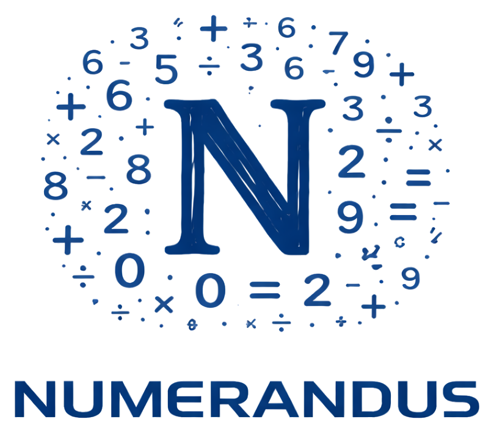

Diagnosticar
Avaliações ajudam a revelar lacunas de aprendizagem e orientar prioridades pedagógicas.
Matemática nos anos iniciais
Um programa para transformar dificuldade em percurso de aprendizagem.
A Numerandus combina jogos pedagógicos, trilhas digitais, atividades em sala, avaliações e dados de acompanhamento para fortalecer o ensino de matemática no Ensino Fundamental.
Alunos aprendem de forma mais visual, concreta e progressiva. Professores ganham recursos para identificar lacunas, orientar intervenções e acompanhar a evolução da turma com mais clareza.

Solução completa
A Numerandus apoia a escola em todo o ciclo de aprendizagem: entender onde estão as dificuldades, oferecer experiências de estudo mais envolventes e acompanhar o progresso com dados pedagógicos úteis.
Avaliações ajudam a revelar lacunas de aprendizagem e orientar prioridades pedagógicas.
Trilhas, jogos e exercícios interativos tornam a matemática mais concreta e frequente.
Professores recebem pistas para retomar conceitos e personalizar ações em sala.
Relatórios e indicadores mostram avanços, dificuldades recorrentes e evolução por turma.
Ecossistema Numerandus
O programa foi pensado para funcionar como apoio real ao professor, sem substituir o trabalho pedagógico. Cada componente tem uma função clara dentro da rotina escolar.
Trilhas organizadas por ano escolar, com objetos digitais, vídeos, exercícios, simuladores e atividades para reforço e aprofundamento.
Apoio digital para dúvidas, explicações passo a passo e sugestões de novas práticas durante o estudo.
Avaliações Matemáticas Escritas com correção assistida, rubricas configuráveis e relatórios de proficiência.
Jogos em realidade virtual e sensores físicos para experiências mais imersivas de aprendizagem matemática.
Kits manipulativos para sala de aula, estimulando colaboração, raciocínio lógico e construção concreta de conceitos.
Para escolas e redes
O foco é tornar a aprendizagem matemática mais acompanhável, mais ativa e menos dependente de tentativas isoladas.
Identifica dificuldades antes que elas se acumulem e prejudiquem novos conteúdos.
Usa jogos, desafios e experiências digitais para aumentar participação e prática.
Organiza dados e recursos para facilitar intervenções, reforço e planejamento.
Oferece indicadores para acompanhar turmas, anos escolares e evolução do programa.
Combina recursos físicos e digitais para trabalhar conceitos de forma visual e manipulativa.
Permite implementar uma estratégia consistente de matemática em diferentes escolas.
Implantação
A Numerandus pode ser implantada em escolas e redes com acompanhamento técnico-pedagógico, formação de professores e monitoramento dos resultados ao longo do uso.
Contato
Converse com a equipe para entender como o programa pode apoiar a aprendizagem matemática na sua escola ou rede de ensino.
WhatsApp
+55 81 99168-2585
Telefone
+55 81 3040-8313
Institucional
Programa desenvolvido pela Educandus.